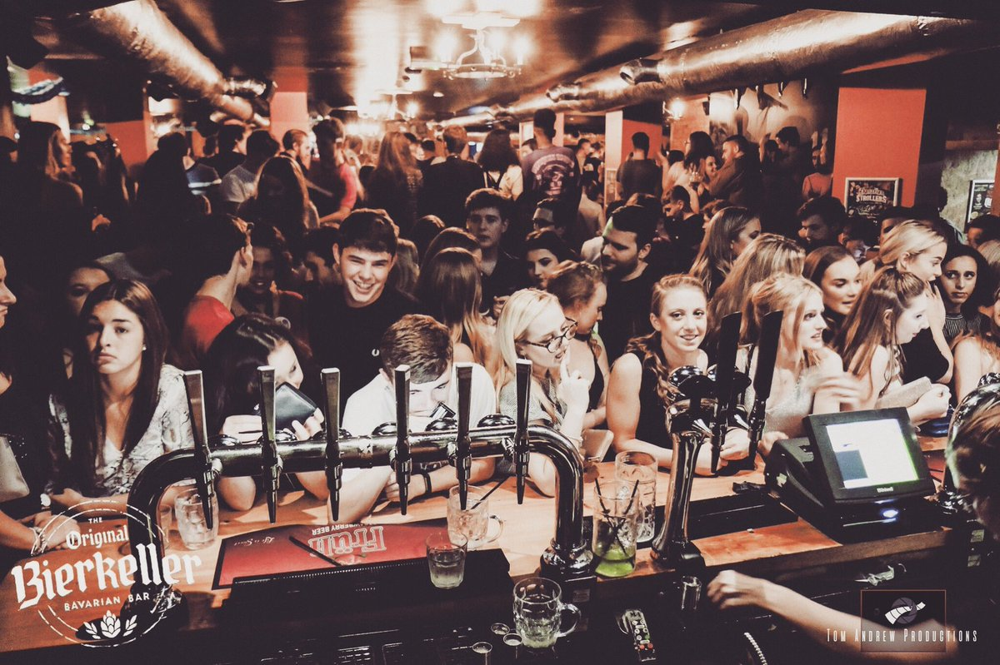

Pop Tarts
Hosted at The Foundry inside the University of Sheffield’s Students Union, PopTarts is without a doubt the most popular student night out in Sheffield. Recurring every Saturday, their gimmick is playing exclusively cheesy hits, guaranteed to fill the dance floor to capacity every week; think Spice Girls, McFly, Smashmouth, ABBA, and so many more. This weekly event is almost always sold out, often with the £5.00 tickets being completely gone within their first hour on sale every Sunday morning, so make sure you act quick!
Pop Tarts Website
Google Maps
The Leadmill
The Leadmill is without a doubt THE place to be for any lover of indie music. Acting as a comedy club, live music venue, occasional cinema, and popular club, The Leadmill almost certainly offers something for you. It is Sheffield’s longest running live music venue, having hosted the likes of Pulp, Coldplay, The Stone Roses, and Lewis Capaldi, while also offering highly popular nights out such as the monthly ‘Club Tropicana’ 80’s music night. Although less convenient for University of Sheffield Students, it is just a stone’s throw from Hallam, and is popular with the wider Sheffield community too.
The Leadmill Website
Google Maps
Code
Having been nominated as Sheffield’s best club four years in a row, of course CODE must also be included on this list. As one of Sheffield’s largest clubbing spaces, CODE has established itself as a respected venue offering affordable nights out to fulfil all your chart and rap needs. It’s three weekly events - Student Saturdays, Jump Around on Thursdays, and Chaos every Tuesday - plus regularly hosting live performers and DJ sets makes CODE an incredibly popular venue, especially amongst non-student members of the community.
Code Website
Google Maps
Bierkeller
This popular venue on Sheffield’s infamous West Street follows the well-known model of a German Oktoberfest themed bar, complete with large stein glasses and long wooden tables to be danced upon. A Sheffield bar crawl would be incomplete without this popular stop, well known for its inventive cocktails (particularly the suspiciously-green ‘Frogenstein’) and sing-along hits, which are loved by all, if admittedly a bit repetitive… Be prepared to leave with a few bruises as the floors do get slippy from all that spilled beer, and if at least one of your group doesn’t dance their way off a table, it won’t have been a successful night!

Bierkeller Website
Google Maps
Corporation
Lovingly known as Corp by its regulars, this venue hosts a wide range of entertaining nights out. Themes nights of musical choices include heavy rock, punk, or perhaps it’s most well-known Skool Disco, where patrons are encouraged to don school uniforms and dance the night away. The greatest advantage of this club is its three different floors of music, typically meaning there is something to suit anyone, on any given night. Cop is also known for its rainbow pints, in which three shots of vodka are mixed with one of seven vibrant mixers; patron beware, however, as attempting to ’complete the rainbow’ in one night can leave you with a rather sore head the next day…
Corporation Website
Google Maps